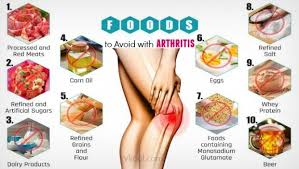
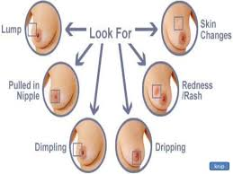
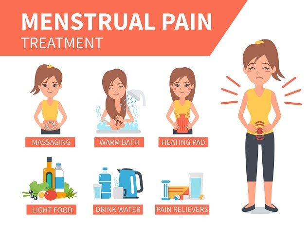
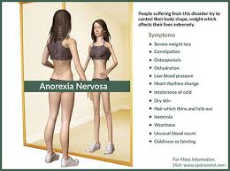

Health
Listed down bellow are common health issues mostly found in teenage girls and woman with the definition and how to prevent getting them.
Health Issues
Cervical Cancer is a tumor of the cervix. It can be prevented with P.A.P. a smear screening and a HPV vaccine. It can be cured with medical procedure, medication, surgery, or by going to the doctors. It physically affects your sex organs and mentally you may feel embarrassed.
Arthritis is joint inflammation causing pain and stiffness that can worsen with age. There are no preventions but if you have healthy joints you should maintain the mobility and avoid the pain, and maintain a healthy weight. You can cure it by doing physical exercises, using a heating pad, going to therapy, taking medications prescribed by your doctor, or having surgery.
Eating disorders- Arfid is Avoidant Restrictive Food Intake Disorder where people with it do not consume enough calories to grow, develop, and maintain basic body functions. This can result into weight loss and difficulty with eating. The cure for this is to go to the hospital, get medications and reintroduce all foods back into the patients life.
Myasthenia gravis is a condition causing abnormal weakness of certain muscles. To prevent this youd treat infections promptly, careful hygiene and stay away from sick people. To cure this you can take medications and have a surgery.
Anxiety is a term for several disorders that cause nervousness, fear, apprehension, and worrying. Anxiety can cause heart disease, kidney disease, and stroke with those with diabetes. To prevent having this you should have a balanced diet, limit alcohol and sugar and keep a journal. Cures are to have self care, take medications, and going to therapy. Eating dark chocolate, blueberries, almonds, yogurt, salmon, etc,. could also help.
Depression is a serious medical illness that negatively affects how you feel, the way you think and how you act. To prevent having it you can improve your self esteem, get enough sleep, eat well, exercise, talk to friends and family, and medical checkups. To cure it you can take medications, go to therapy, and going to the doctors.

Breast cancer is the most common cancer in women. It is where the cells in the breast grow out of control. To prevent it you should limit alcohol, dont smoke, control your weight, be active, and avoid exposure to radiation and environmental pollution. You can cure breast cancer by having surgery, going to therapy, and taking medications. You should eat proteins, whole grain foods, fruits, and vegetables as well.
Dysmenorrhea is a painful menstruation, involving abdominal cramps. To prevent this you can improve your diet, use safe painkillers, take herbal tea, try fish oil, take vitamins, and relax the nervous system. To cure this you can take aspirin and other pain relievers. You can eat dark chocolate, bananas, pineapples, salmon, and tea.
Anorexia nervosa is the lack or loss of appetite for food. To prevent this try not categorizing your food, dont compare yourself to others and make goals for yourself. To cure this you can go to therapy, take medications, and go to a specialist.
